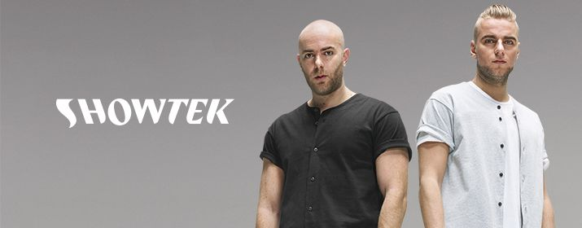

Mainstage
Die Brüder Sjoerd und Wouter Janssen alias Showtek aus den Niederlanden haben
2002 auf dem eigenen Label Dutch Master Works ihre Karriere als DJ´s und
Produzenten begonnen. Damals produzierten sie ausschließlich Hardstyle. Ihre
Zusammenarbeit mit ID&T brachte ihnen unter anderem Fixauftritte bei den
Hardstyle Festivals Q-Dance und Qlimax ein.
2010 schlug Showtek eine neue Genrerichtung ein und wechselte von Hardstyle zu
Progressive House.
2014 entstand in Zusammenarbeit mit David Guetta der Track Bad. Badkonnte in
über 10 Ländern bis in die Top 5 vorrücken.
Im Dezember 2014 erschien zudem der Track 90s by Nature, der in Zusammenarbeit
mit dem US-amerikanischen Sänger und Rapper MC Ambush entstand. Stilistisch ist
das Stück an den aktuellen Bigroom- und den klassischen 1990er-Jahre-TechhouseStil angelehnt.